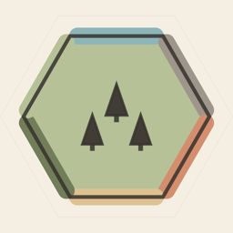

Tideways
Privacy Policy
Last updated: October 2026
The short version: Tideways itself collects nothing. Tideways is free; its ads — a small banner, an occasional break ad between voyages, and optional reward videos — are served by Google non-personalised. A one-time purchase removes banners and break ads for good, and reward boosts can be switched off in Settings.
What we store
Tideways keeps your high scores, achievements, settings, saved games, and recent voyage history locally on your device, using Apple's standard iOS preferences storage. This data never leaves your device and is deleted when you delete the app.
What we don't do
- No analytics SDKs, no ad profiling, no tracking across apps.
- No ads in the middle of a move — break ads appear at most every 30 minutes, only between voyages.
- No account of ours, no servers of ours.
- No personal data is collected by us, and nothing is sold.
Ads (Google AdMob)
Tideways is free to play. It shows one small banner on the menu and below the board, and at most one short full-screen "break ad" every 30 minutes — only when you leave a voyage or start the next one. It also offers strictly voluntary "reward boosts": you may choose to watch a short video ad in exchange for a few extra undos, skips, or tiles. A video only ever plays after you tap a clearly-labelled boost button — never automatically.
- Ads are requested in non-personalised mode: no advertising profile is built, and Tideways never shows the iOS tracking permission dialog.
- When an ad is served, Google AdMob processes technical data (such as IP address, device model, and coarse ad-performance signals) to deliver the ad, prevent fraud, and cap repeat ads. This processing is governed by Google's Privacy Policy and AdMob's advertising policies.
- In the EEA, the UK, and Switzerland you will be asked for consent before the first ad, and you can revisit that choice any time under Settings → Ad privacy options.
- The one-time "Remove Ads" purchase switches banners and break ads off for good. You can also switch reward boosts off in Settings. With both, the ads SDK is never started.
Purchases
The optional "Remove Ads" purchase is processed entirely by Apple through the App Store. Tideways only learns whether the purchase is active on your Apple Account — never your payment details.
Game Center
If you are signed in to Game Center, your scores and achievements are submitted to Apple's Game Center leaderboards. This is handled by Apple under Apple's Privacy Policy; you can sign out or hide your profile in iOS Settings at any time.
Reminders
Daily reminders are off until you turn them on. They are scheduled locally on your device by iOS — no push server is involved.
Feedback e-mails
If you choose "Send feedback" in Settings, the app opens your own Mail app with a pre-filled draft (including the app version and device model, to help with troubleshooting). Nothing is sent unless you tap Send, and the e-mail travels through your own mail account — not through us.
App Store & ratings
If you rate the app, that interaction is handled entirely by Apple under Apple's Privacy Policy. Tideways never sees it.
Children
Tideways is suitable for all ages. The app itself collects no data from anyone, ads are never personalised, and ad requests are not tagged for interest-based advertising.
Contact
Questions about privacy? See the support page.
Kurzfassung (Deutsch): Tideways selbst sammelt keinerlei Daten. Spielstände, Erfolge und Einstellungen bleiben lokal auf deinem Gerät. Kein Tracking, keine Analyse, kein eigenes Konto. Tideways ist gratis. Ein kleines Banner, höchstens alle 30 Minuten eine Pausen-Werbung zwischen Reisen und freiwillige Belohnungs-Videos liefert Google AdMob nicht-personalisiert aus (dabei verarbeitet Google technische Daten wie IP-Adresse und Gerätemodell gemäß der Google-Datenschutzerklärung); in der EU/EFTA wirst du vorher um Einwilligung gebeten. Der einmalige Kauf „Werbung entfernen“ (abgewickelt von Apple) schaltet Banner und Pausen-Werbung für immer ab, Boosts lassen sich in den Einstellungen abschalten. Game-Center-Punkte verarbeitet Apple; Erinnerungen sind lokal und standardmäßig aus. „Feedback senden" öffnet lediglich deine eigene Mail-App — gesendet wird erst, wenn du selbst auf Senden tippst. Fragen: siehe Support-Seite.